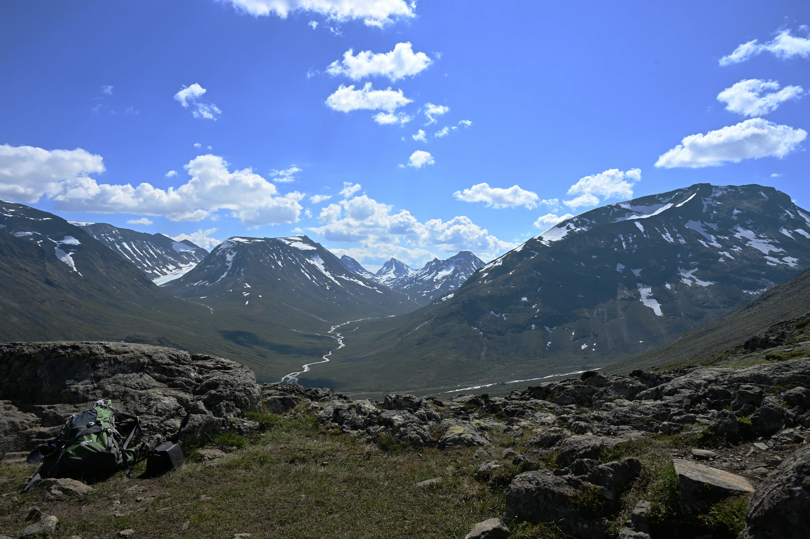
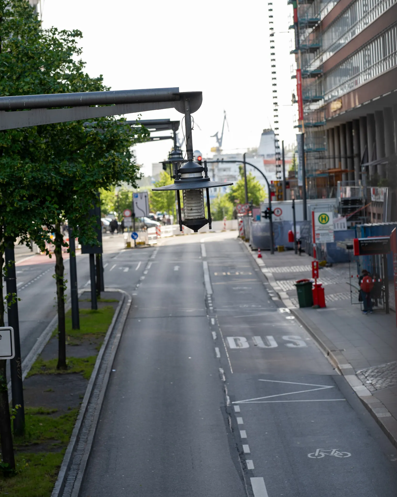

Kapitel I
Landschaften
Weite Horizonte, stille Orte — Expeditionen, in denen Wetter, Geduld und Perspektiven das Bild komponieren
Galerie ansehen →
Kapitel II
STREET
Symmetrie, klare Farben und Ordnung. Klare Linien, in denen man sich verlieren kann.
Galerie ansehen →001

002
003
Demnächst
Weitere Projekte

Über mich
Ich bin JaCo (oder auch Colin) – ein Video- und Fotograf, der die Ruhe und Gelassenheit der Natur am meisten schätzt. Von Wald und Wildnis bis zur Straße dazwischen macht es unglaublich viel Spaß, die Welt zu erkunden und sie festzuhalten. Erinnerungen sind am Ende das, was uns ausmacht.